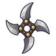
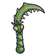
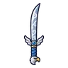

กล้องดูดาวเดินได้
มอนธาตุลม Lv 50–57
เจอที่
| แมพ | โซน | Lv | ภูมิภาค |
|---|---|---|---|
| หอดูดาวนกฮูก ชั้น 1 | 50–52 | ดินแดนเหนือ | |
| หอดูดาวนกฮูก ชั้น 2 | 53–55 | ดินแดนเหนือ | |
| หอดูดาวนกฮูก ชั้น 3 · โดมดาว | 55–57 | ดินแดนเหนือ | |
| หอรากมืด (Dark Root) | รากกินดาว | 71–80 |
ค่าสถานะตามเลเวล
| Lv | HP | ATK | DEF | MDEF | EXP | Job |
|---|---|---|---|---|---|---|
| 50 | 10,098 | 93–139 | 14 | 12 | 64 | 48 |
| 53 | 11,797 | 98–147 | 15 | 13 | 68 | 51 |
| 57 | 14,198 | 105–158 | 16 | 14 | 72 | 54 |
ตีด้วยธาตุไหนดี
แรงขึ้น: ดิน ×1.5 พิษ ×1.25
เบาลง: น้ำ ×0.5 ลม ×0.25
วัตถุดิบที่ดรอป
| ของ | โอกาส | |
|---|---|---|
| เลนส์ดาวกลม | 55% | 1 ชิ้น (15% ได้ 2) |
อุปกรณ์ที่ดรอป (6)
| ของ | โอกาส |
|---|---|
 ดาวยักษ์เหล็กช่างค่าย | 0.25% |
| 0.12% | |
 เคียวคู่แขนตั๊กแตนตำข้าว | 0.12% |
| 0.08% | |
| 0.06% | |
 ดาบคู่หัวอินทรีพายุ | 0.06% |
สกิล
ยิงกระจาย (Lv 25+) · ยิงกระจาย (Lv 60+) · ปาตกใส่ (Lv 60+)